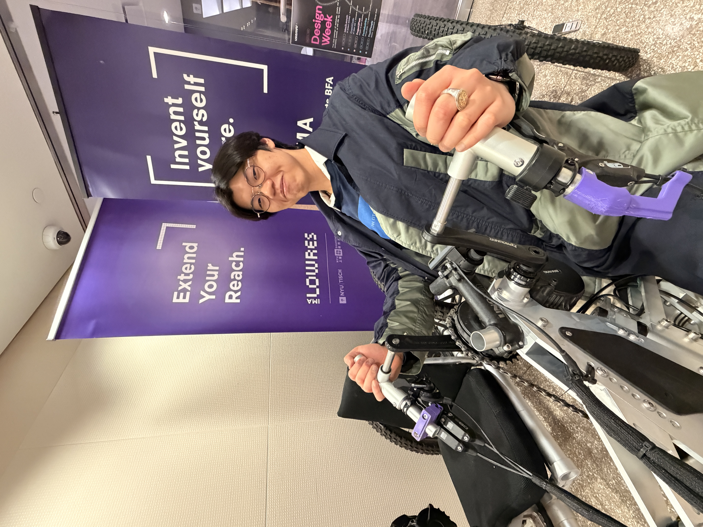

Meet Electric Lead Jonathan Teng
Jonathan Teng (Electrical Engineering '27) recounts his journey with Project Mjolnir and his role in developing the bike's embedded systems.

When Jonathan joined Project Mjolnir, he was an electrical engineering student stepping into a team that was largely focused on mechanical design. The project offered a chance to put electrical engineering to work in a new way: building an electronic platform that could collect data about how a bike and its rider behave, and help the team improve the design.
Now a senior and the team’s only current electrical engineering student, Jonathan has spent his time at Mjolnir developing the bike’s embedded systems. The platform has evolved through several prototypes, from early proof-of-concept designs to a more capable setup with GPS, an inertial measurement unit (IMU), and linear position sensors that track suspension movement. The next step is a compact printed circuit board (PCB), intended to replace a tangle of wiring and bring the system together.
“If we gather the necessary data, we could identify the system’s parameters and use that to create a better mechanical design.”
For Jonathan, the larger goal is to use that data for system identification: understanding the bike’s behavior well enough to inform decisions about its mechanical design, including motor placement and rider position. He hopes future team members with digital signal processing and controls experience can help turn the growing collection of sensor data into useful analysis.
Much of the work has meant learning beyond the classroom. Jonathan says coursework gave him some foundations, but developing the system has required substantial independent study. He credits the project—and the people who helped him get started—with giving him room to explore practical applications of electrical engineering.
"I think professors are very supportive. I think that makes it a lot easier to interact and work with them. They also really encourage us to like learn by ourselves as well.""
Communications, radio, or radar, where he is drawn to the mathematical side of electrical engineering. His experience at Mjolnir has nevertheless given him a hands-on view of how engineering disciplines can come together to solve a design problem.